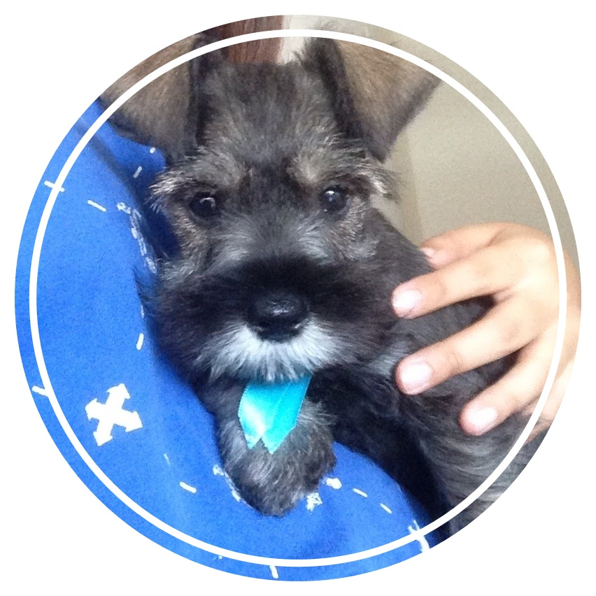
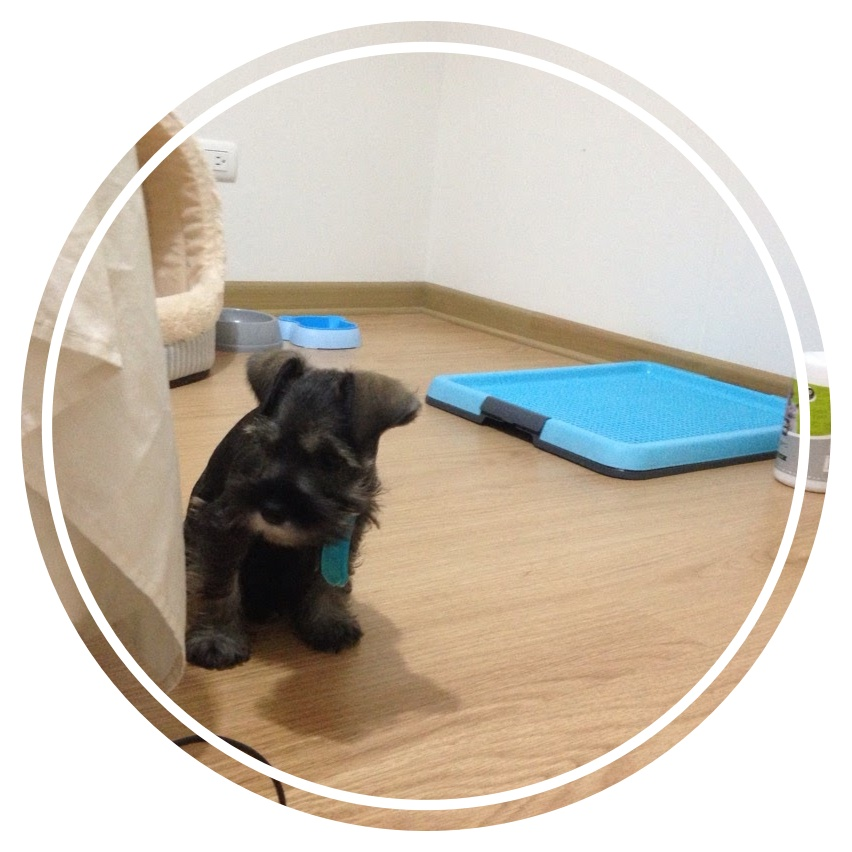
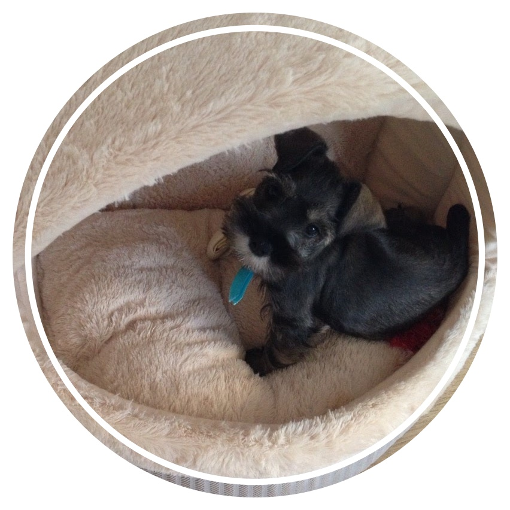

- 
- 
- 
birthdate
02. May. 2016, actually this is not my exact birthday. However, the day my mom adopted me was selected as my birthday!
place
I was born in a petshop named 'Petshop Eddy' in Lima, Peru. Actually, there was my sister too who was super cheerful.
Not like my sister, I was very shy and literally shivering from fear, but mom chose me! Yes, I am the chosen one! Luckiest man ever!
name
I am curious! Why my name is Mandu? What is the meaning of Mandu? Anyone can please let me know?
Once I overheard that my mom was preparing her dinner, then she said "Okay, tonight beer with Mandu" That was so odd.